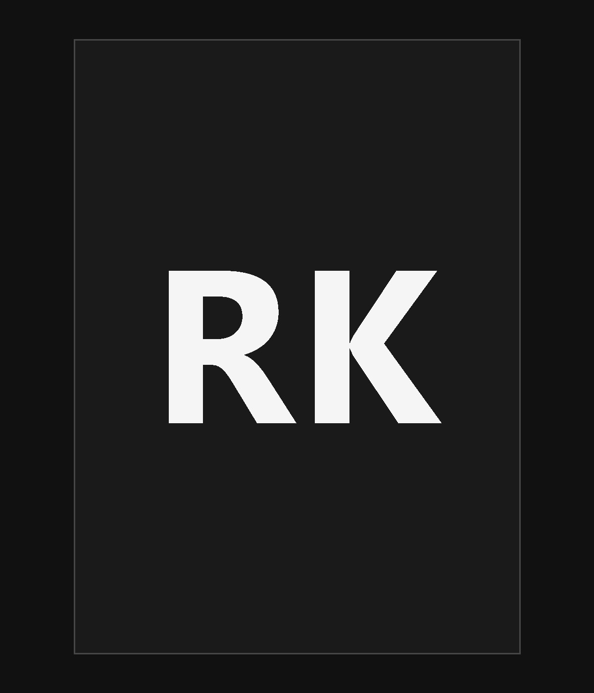

Library Management System
A full-stack library management platform with authentication, book management, issue and return workflows, inventory tracking, and responsive dashboards.
INFORMATION TECHNOLOGY • MIT MANIPAL
An Information Technology student who enjoys building practical software, experimenting with systems, and turning ideas into useful products.
I’m currently a 3rd-year B.Tech Information Technology student at Manipal Institute of Technology, learning by creating, debugging, and exploring how real systems work.

ABOUT
I’m an Information Technology student interested in software development, systems, and building things that are actually useful. I enjoy working across the stack, understanding how applications are structured, and figuring out how to make them work reliably in the real world.
My interests sit at the intersection of development, experimentation, and practical problem solving. I like learning by building, testing ideas in small projects, and exploring infrastructure and self-hosted systems along the way.
EDUCATION
Manipal Institute of Technology
SELECTED WORK
A full-stack library management platform with authentication, book management, issue and return workflows, inventory tracking, and responsive dashboards.
An explainable machine-learning project focused on LDL-C prediction, with emphasis on interpretable results and model transparency.
A deep-learning project for multiclass MRI classification, with visual explainability using Grad-CAM and related techniques.
A self-hosted environment built around containerized services, databases, reverse proxying, media services, and secure remote access.
SKILLS
BEYOND THE CODE
CONTACT
Have an idea, a project, or just want to say hello? Feel free to reach out.